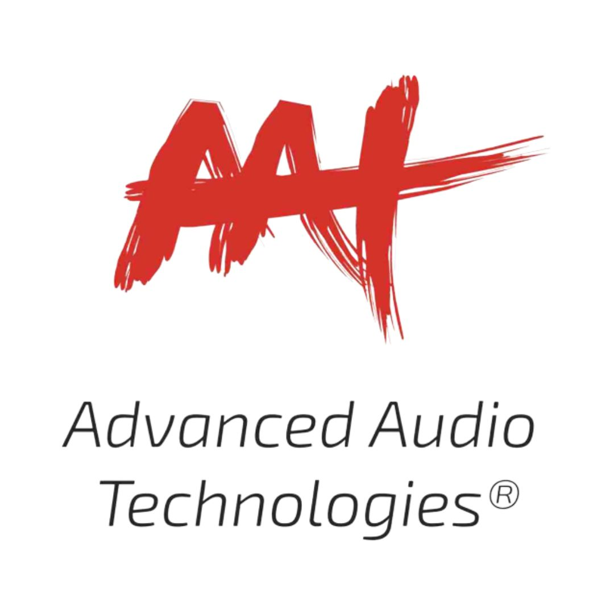
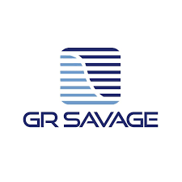
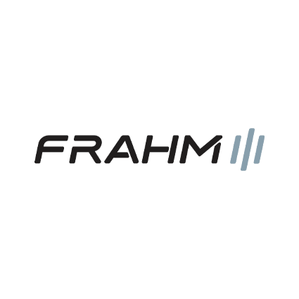
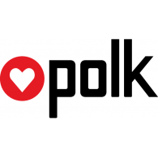
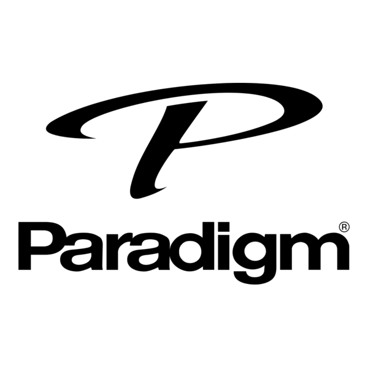
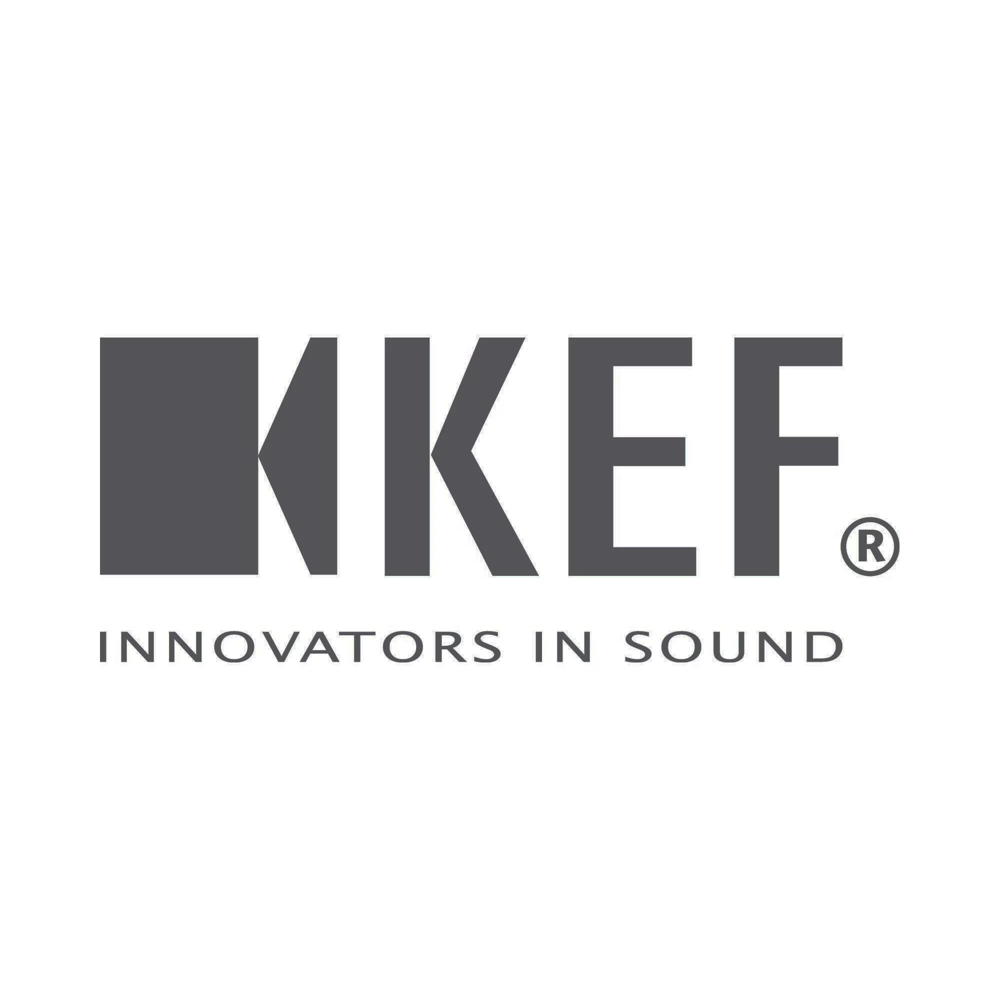

Marcas nacionais
AAT

Fabricante brasileira conhecida por produzir caixas acústicas voltadas ao Hi-Fi e Home Theater, oferecendo modelos com bom equilíbrio entre desempenho, qualidade e custo-benefício.
GR-Savage

Marca nacional focada em áudio de alta fidelidade, reconhecida principalmente por seus amplificadores artesanais e equipamentos desenvolvidos para audiófilos.
Frahm

Marca brasileira bastante conhecida no segmento de áudio residencial e profissional, produzindo caixas acústicas, amplificadores e sistemas de som com foco em potência, durabilidade e versatilidade.
Marcas Internacionais
Advance Paris
Marca francesa conhecida pelo visual elegante e por amplificadores integrados com sonoridade quente, dinâmica e muito musical.
Cambridge Audio
Fabricante britânica bastante popular no universo Hi-Fi, produzindo DACs, streamers e amplificadores com foco em clareza e fidelidade sonora.
Polk Audio

Empresa norte-americana famosa por suas caixas acústicas e soundbars, oferecendo produtos com assinatura sonora envolvente e acessível.
Paradigm

Marca canadense reconhecida mundialmente por caixas acústicas de alta precisão, muito utilizadas em sistemas estéreo e Home Theater.
KEF

Tradicional fabricante inglesa conhecida pela tecnologia Uni-Q, que melhora a imagem estéreo e a dispersão sonora das caixas acústicas.
Marantz
Empresa japonesa extremamente respeitada entre audiófilos, produzindo amplificadores, receivers e players com assinatura sonora sofisticada e detalhada.